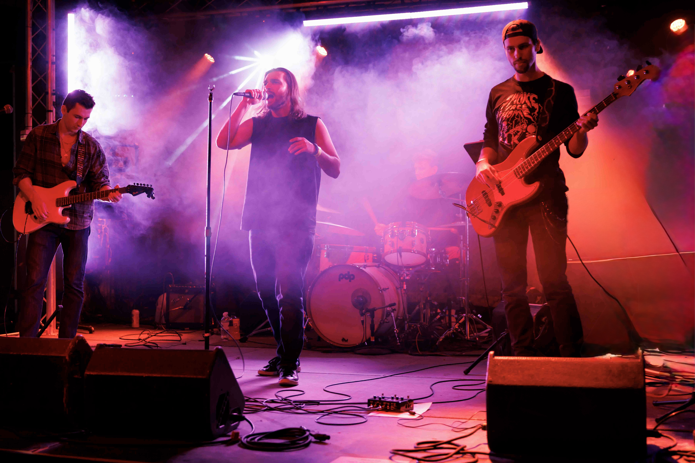
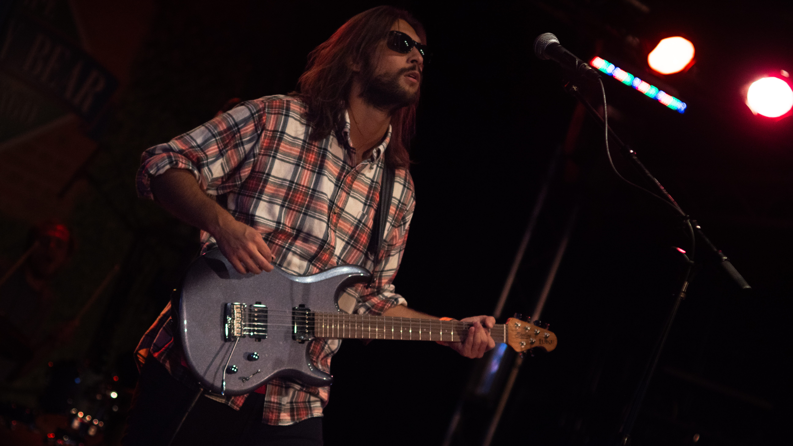
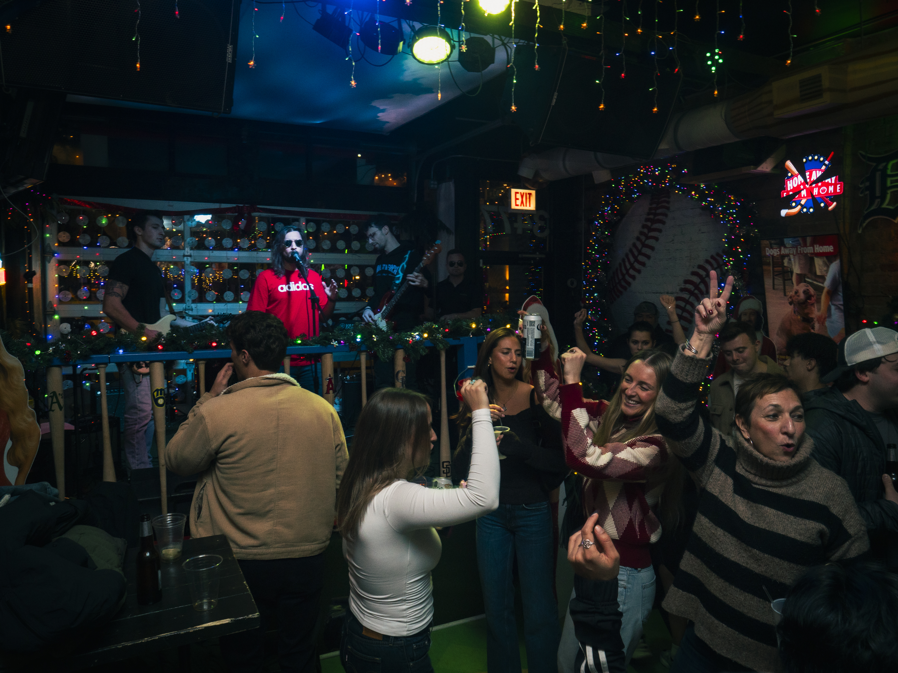
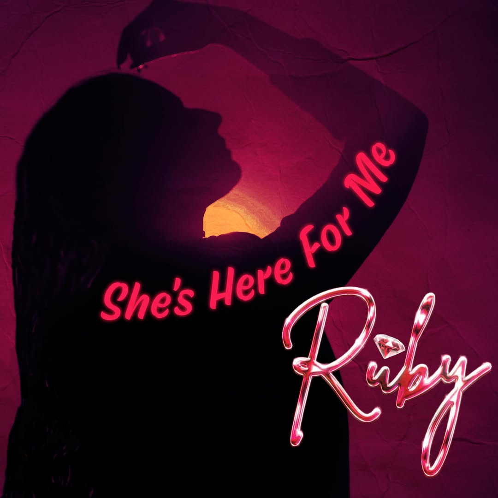
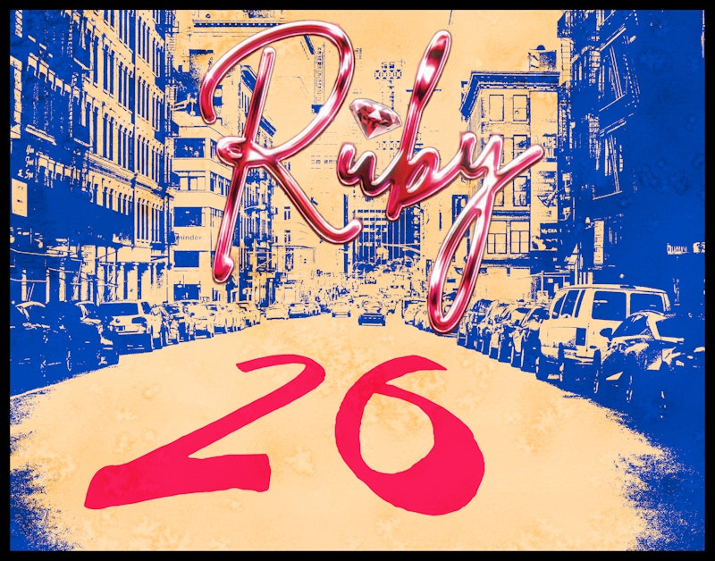
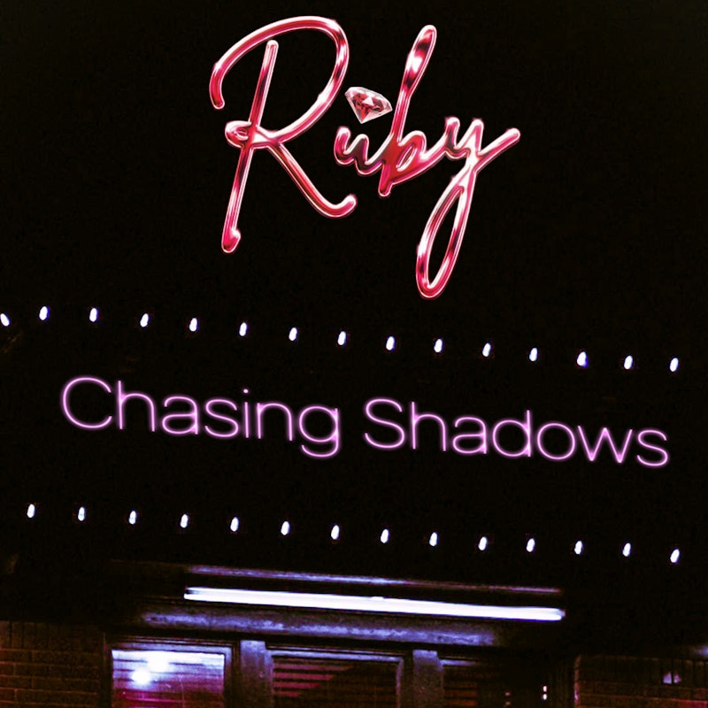
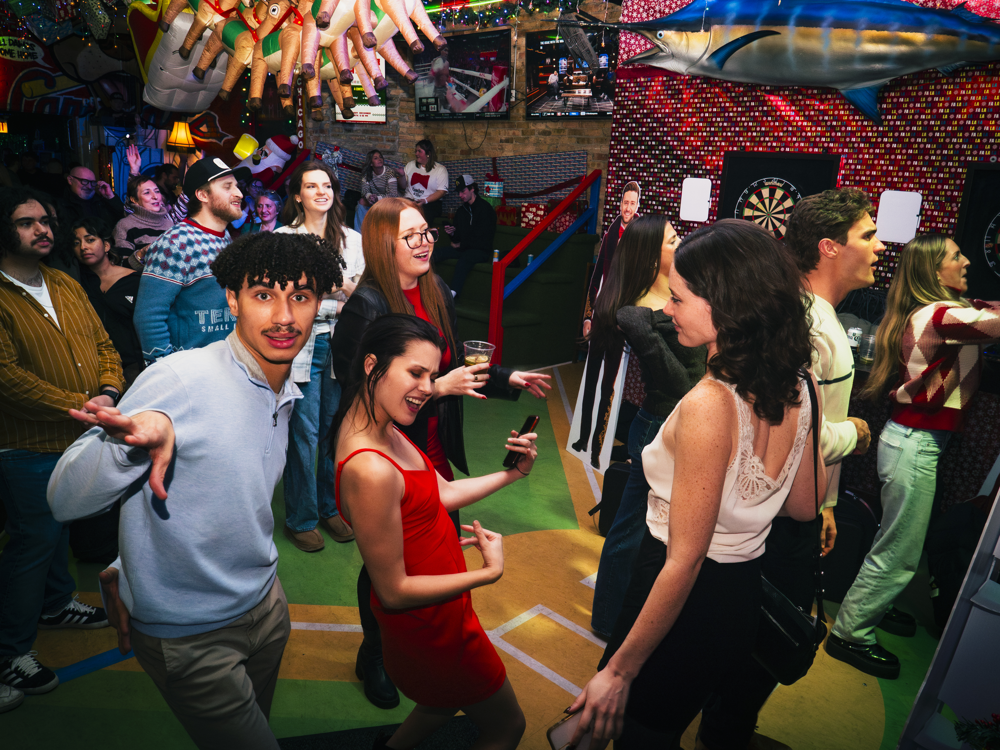

For venues
Full-band energy
A polished live feel that fits neighborhood bars, music venues, and downtown event nights.
Chicago live shows / covers / originals
Classic Music to bars, private events, and packed-out Chicago nights.
Chicagoland rock band Ruby blends a variety of classic rock music that is perfect for all events and ages.

As Seen At
Live moments
Ruby is positioned here as a band that can do both sides well: deliver a fun, recognizable live set for crowds and also point people toward original releases that feel current and fresh.
Ruby creates a mix that is powerful for booking. It tells venues and event planners they are hiring performers, not just background noise.


Live set focus
For venues
A polished live feel that fits neighborhood bars, music venues, and downtown event nights.
For private events
Easy work with for fundraisers, corporate events, and special nights that need familiar songs done well.
For fans
Newest releases are available on all popular streaming platforms and on the “original music” tab.
Original music spotlight

Ruby's brand new single is out now with a bright, melodic hook and a polished pop-rock feel.
Stream the new single
A big-hook release that leans into Ruby's modern-meets-retro rock sound.
Stream 26
A more atmospheric side of the band with strong melody and cinematic lift.
Stream Chasing ShadowsQuick links
Keep updated on our live shows, original music, and all news about Ruby The Band

Instagram: @ruby_musicofficial
Music hub: Linktree
Booking: rubyofficial773@gmail.com
Based in: Chicago / Chicagoland